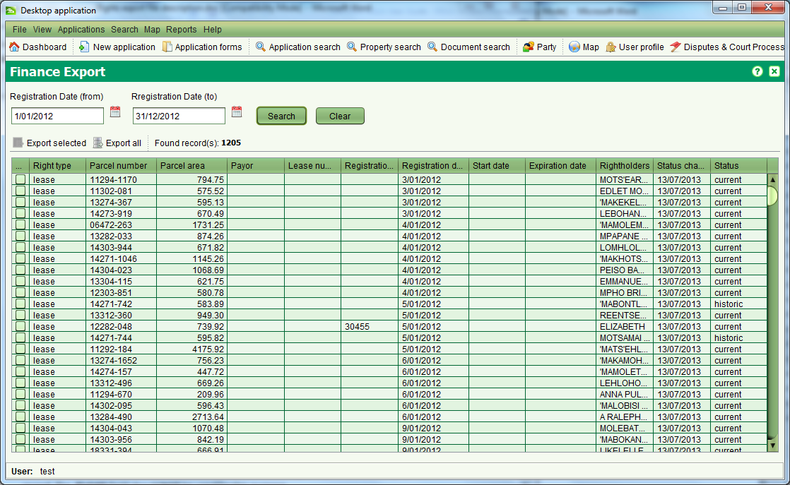

Finance Export
The Finance Export can be used to create a CSV file containing details about
leases required for the LAA Finance System so that the Finance System can
produce bills and statements for Ground Rent and manage Ground Rent payments.
The Finance Export screen can be accessed from the File >
Finance Export menu option.

You can search for recently registered leases using the Registration Date range
and choose to export individual lease details by manually selecting the leases to export (
 Export selected) or export all leases within the specified date range (
Export all).
Export selected) or export all leases within the specified date range (
Export all).
The details exported to the CSV file include:
- The person or organization responsible for making the payment (payer)
- The amount of the payment (i.e. the ground rent)
- The right holders names (i.e. Lessee names)
- The plot number and the plot area.
When performing the export you will be prompted to indicate the file location for
the CSV export file. The export file must then be manually transferred or emailed for
manual upload into the LAA Finance System.
 
Also see